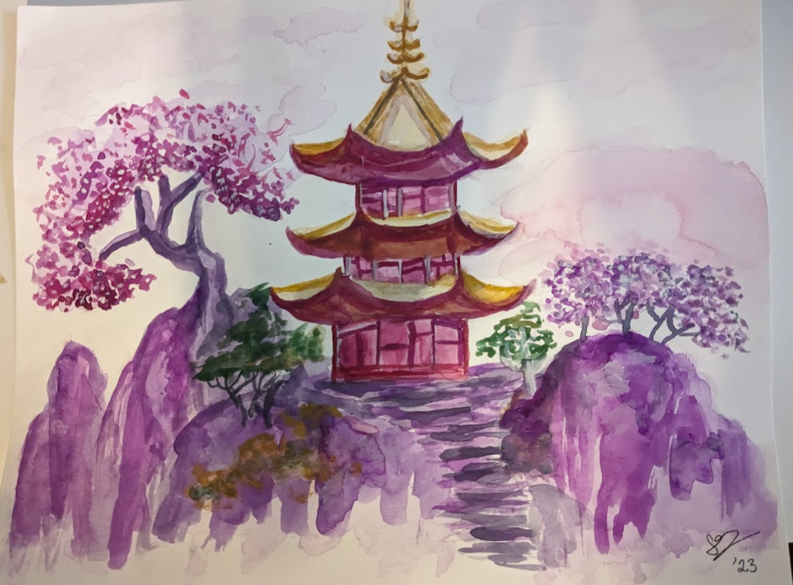
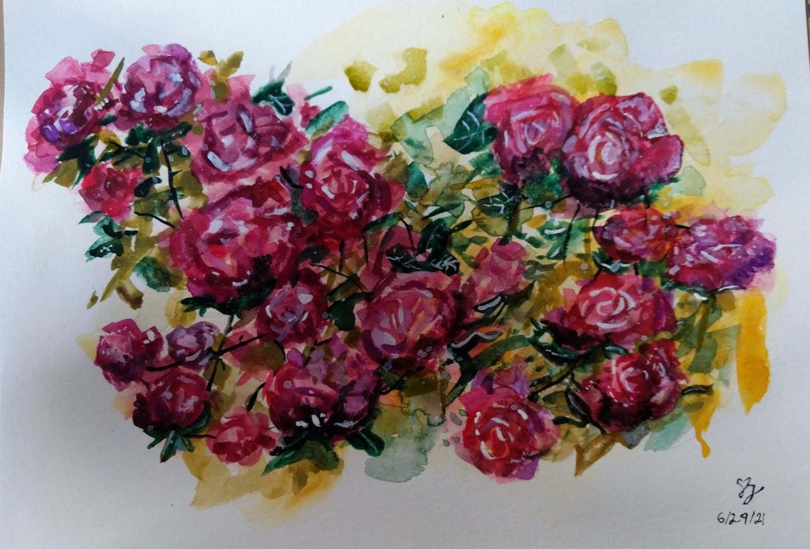
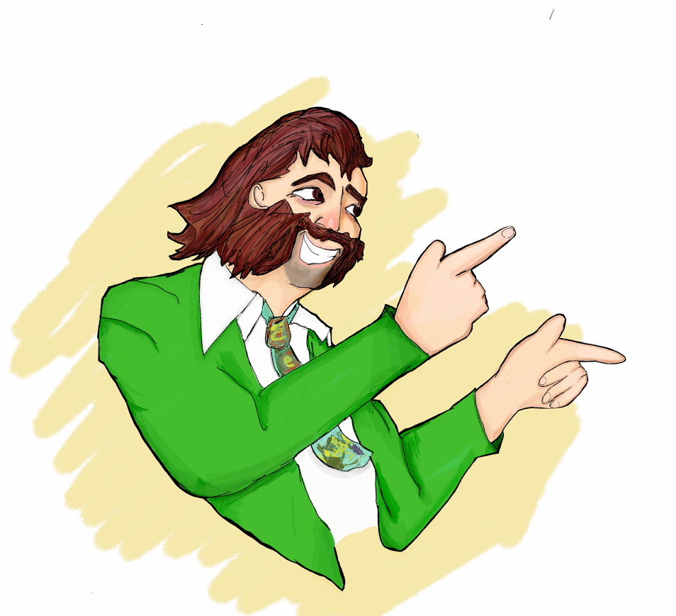
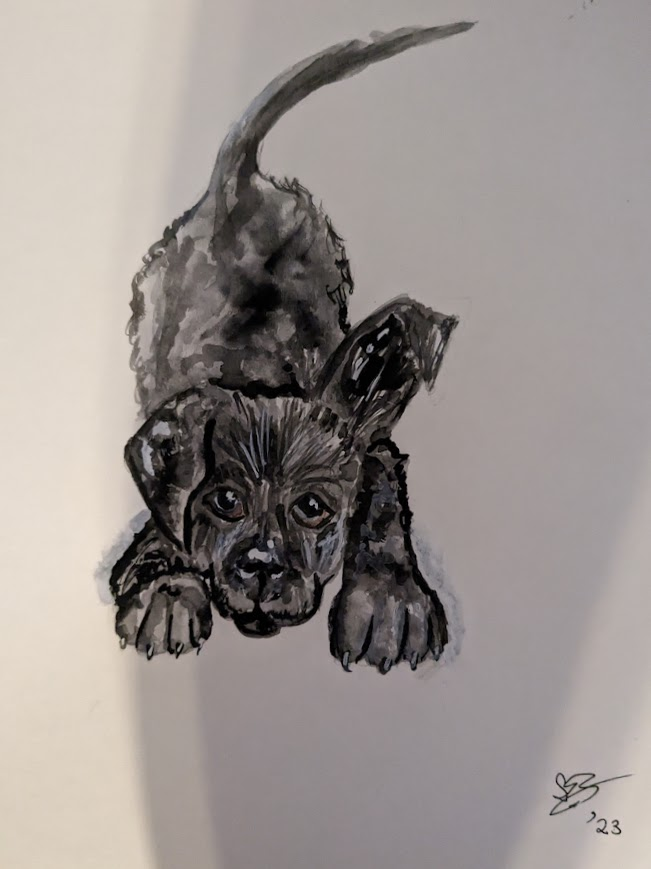
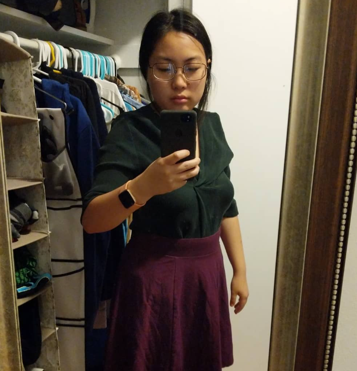
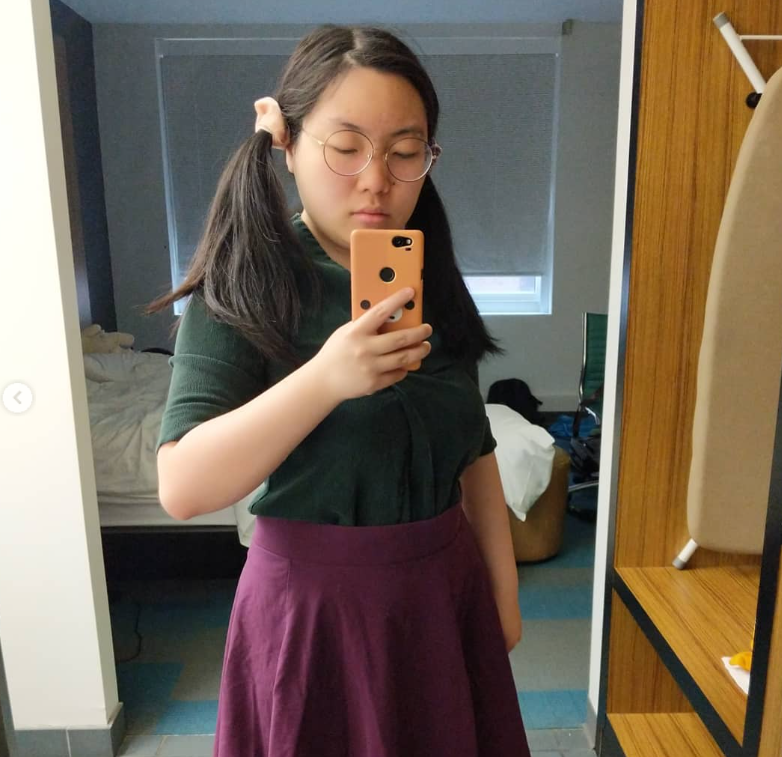
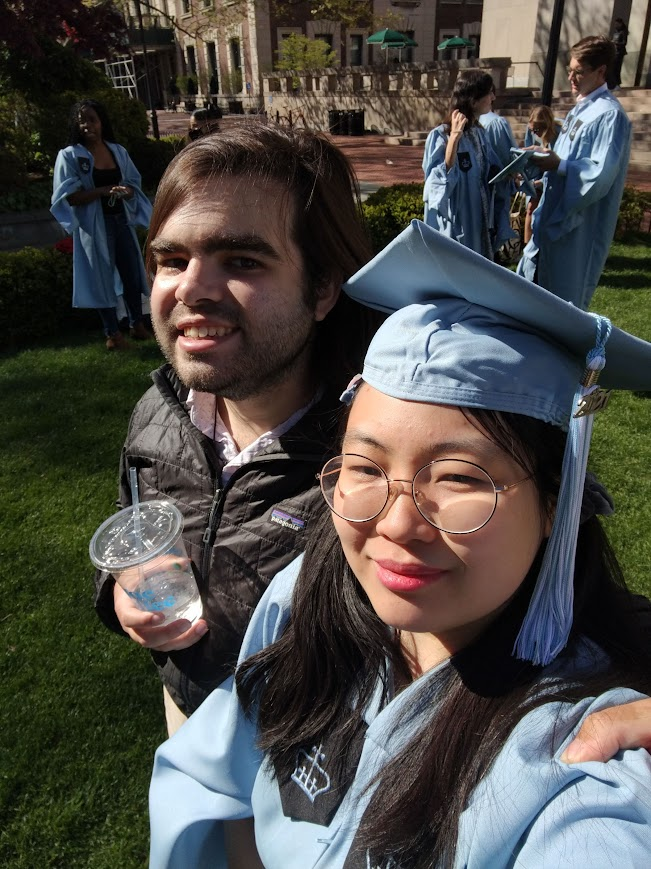
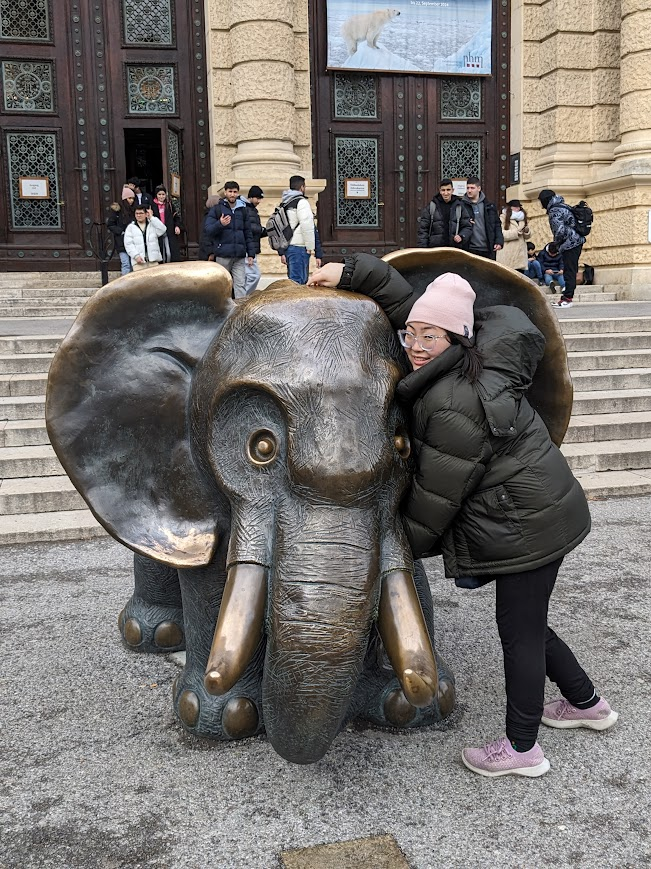
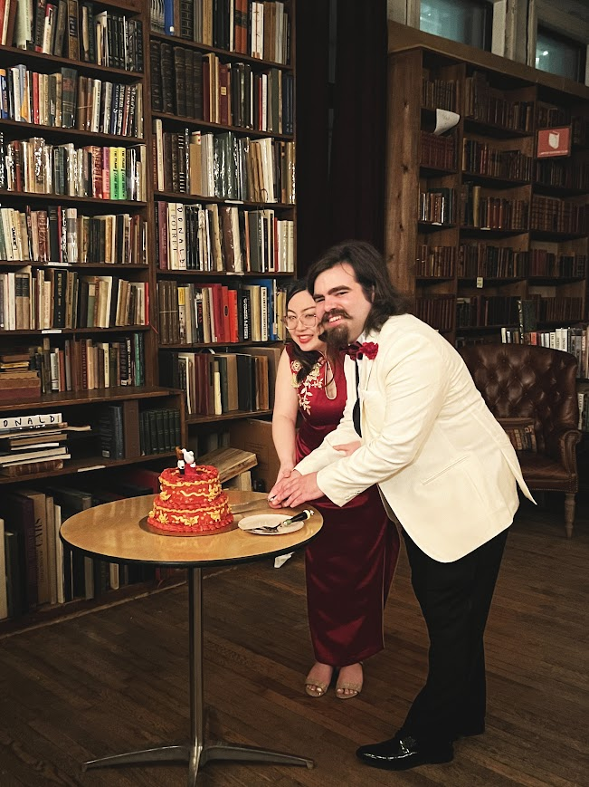

Hi! I’m Stephanie and when I’m not messing with data at work, my hobbies include:
making art
playing the ukulele and singing
volunteering
obsessing over my Rubik's cube time
yoga
practicing ASL
trying to keep up with my husband intellectually as he discusses things like Latin and group theory
Below you’ll find some quick facts about me, some photos of my life, some of my artwork, and a bit more about my volunteer experience.





My first day attending Columbia Business School!

And my final day there! I purposefully wore the same outfit :)

At CBS graduation with my then-boyfriend-now-husband

At the Vienna Natural History Museum. So beautiful!

Cake cutting at my wedding! <3
Volunteering
Giving back to my community has always been incredibly important to me. I try my best to be of help wherever I can.
Two of my favorite organizations to work with are
New York Blood Center
(I hit my 1-gallon milestone on February 2026!) and
Columbia REAP,
the ReEntry Acceleration Program that strives to improve employment opportunities for formerly incarcerated people.